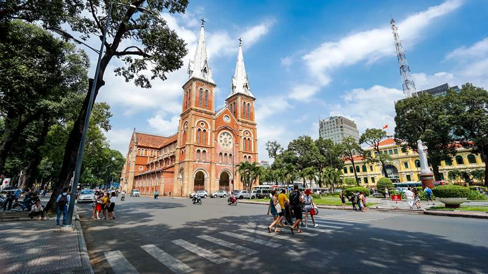

Southern Vietnam
Southern Vietnam has a tropical savanna climate with two seasons: dry season and rainy season (from April-May to October-November).
- South Central Coast: The dry season is long, the rainy season is late and concentrated for a short time
- The South and Central Highlands: the rainy season lasts for 6 months, accounting for 80% of the annual rainfall.
- In the dry season, there is often a serious shortage of water.
The South is located in a typical region of tropical monsoon and sub-equatorial climate, rich in heat and humidity, abundant sunshine, long radiation time, high temperature and total temperate accumulation.
All year round, the temperature of this region is high.
The climate in this region is less volatile during the year.
Rains come and go very quickly.